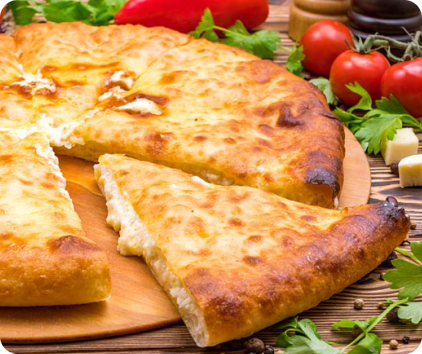

Осетинский пирог
с луком и яйцом
Ингредиенты:
- Кефир — 230 мл
- Молоко — 150 мл
- Сметана — 30 г
- Дрожжи свежие — 25 г
- Сахар — 10 г
- Мука — 600 г
- Яйца — 3 шт.
- Сыр сулугуни — 250 г
- Лук зеленый
- Соль — по вкусу
- Смесь 5 перцев
- Масло сливочное
Рецепт:
Тесто
Приготовим тесто (порция на три пирога). Смешиваем венчиком
кефир, молоко,
сметану и свежие дрожжи. Добавляем сахар, перемешиваем и просеиваем в миску
муку. Начинаем замешивать с помощью лопатки. Если тесто получилось слишком
сухим, добавляем немного молока или кефира, тесто должно быть не очень плотным.
сметану и свежие дрожжи. Добавляем сахар, перемешиваем и просеиваем в миску
муку. Начинаем замешивать с помощью лопатки. Если тесто получилось слишком
сухим, добавляем немного молока или кефира, тесто должно быть не очень плотным.
Расстойка
Выкладываем тесто на стол, присыпаем солью и продолжаем
вымешивать. Через
10-15 минут помещаем тесто под пищевую пленку и оставляем в миске на расстойку
на 30-40 минут.
10-15 минут помещаем тесто под пищевую пленку и оставляем в миске на расстойку
на 30-40 минут.
Начинка
Приготовим начинку. Отвариваем яйца, заливаем
по готовности холодной водой, очищаем и натираем
на крупной терке. Мелко шинкуем зеленый лук, натираем
сыр сулугуни на крупной терке, соединяем с яйцами, добавляем щепотку соли, смесь
перцев и перемешиваем.
по готовности холодной водой, очищаем и натираем
на крупной терке. Мелко шинкуем зеленый лук, натираем
сыр сулугуни на крупной терке, соединяем с яйцами, добавляем щепотку соли, смесь
перцев и перемешиваем.
Раскатка
Присыпаем стол мукой, делим тесто на 3 части. Раскатываем одну
часть в круглую
лепешку, выкладываем начинку, собираем края, защипываем в середине и
раскатываем получившийся «мешочек» скалкой в лепешку, присыпав с обеих сторон
мукой.
лепешку, выкладываем начинку, собираем края, защипываем в середине и
раскатываем получившийся «мешочек» скалкой в лепешку, присыпав с обеих сторон
мукой.
Выпекание
Выкладываем пирог на противень с пергаментом, делаем ножом прокол
в центре и
отправляем выпекаться в духовку
при температуре 200 градусов на 7-10 минут. Вынимаем
из духовки и обильно смазываем сливочным маслом.
отправляем выпекаться в духовку
при температуре 200 градусов на 7-10 минут. Вынимаем
из духовки и обильно смазываем сливочным маслом.
Готово!
Из двух других заготовок теста также оформляем пироги
с любой начинкой, выпекаем и укладываем один на другой, каждый тщательно
пропитав сливочным маслом. Нарезаем
три пирога одновременно. Приятного аппетита!
с любой начинкой, выпекаем и укладываем один на другой, каждый тщательно
пропитав сливочным маслом. Нарезаем
три пирога одновременно. Приятного аппетита!